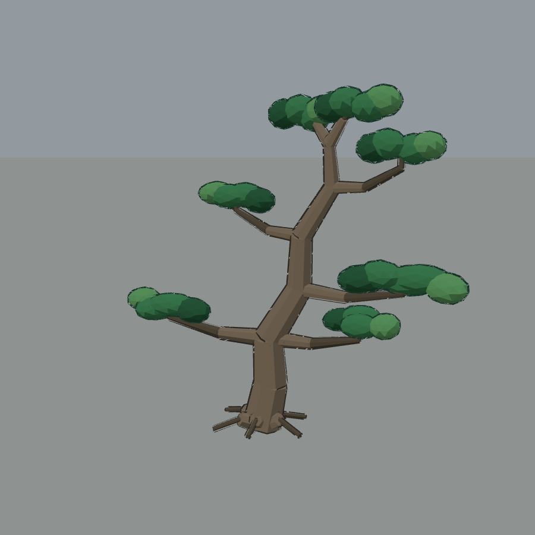
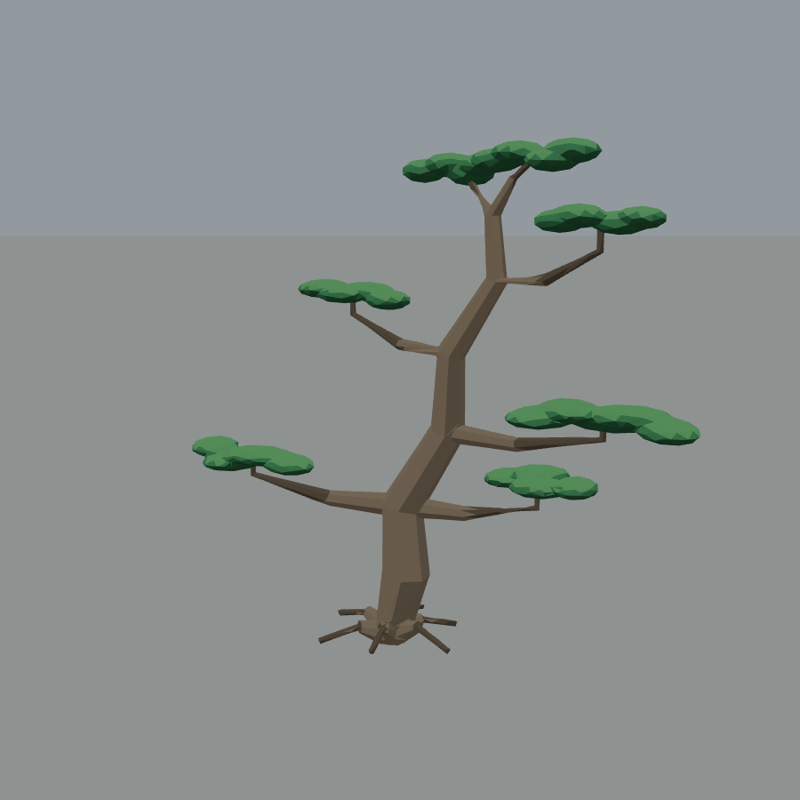
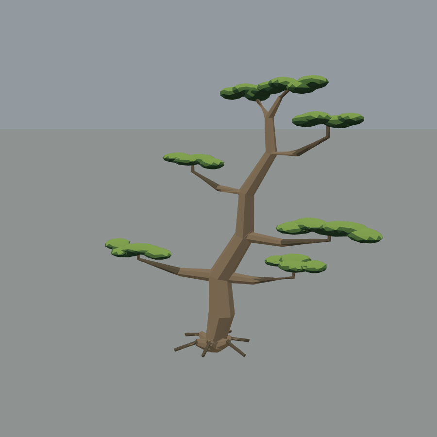

苔庭松树 · 既有 Blender 候选回接
25个原种子，逐株使用真实优化几何。下列三图同相机、同灯光：可分辨几何改善与本轮独立材质调整。
旧网页树

Blender候选原色

Web目标色

29项资产检查通过。连续枝干、扁云冠已回接接口；原GLB与Blender源未改。候选云冠仍比目标图薄，树皮细节更简。全场分散布局、贴地与伏击流程请以主任务最新实景验收为准。
既定目标图 · 逐树范围、来源哈希及测试 · 工程指南
此页为模型同镜头对照，不是完整自然战斗通过声明。